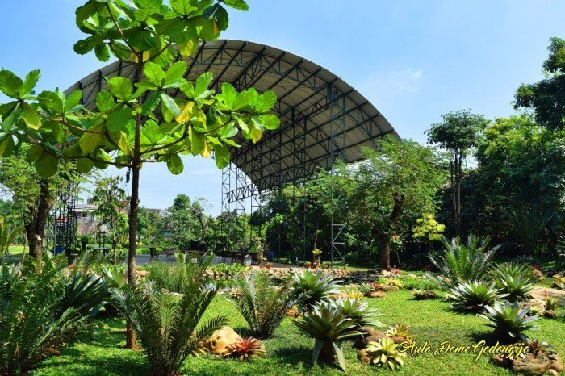
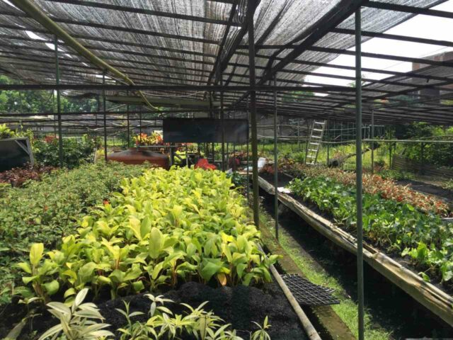
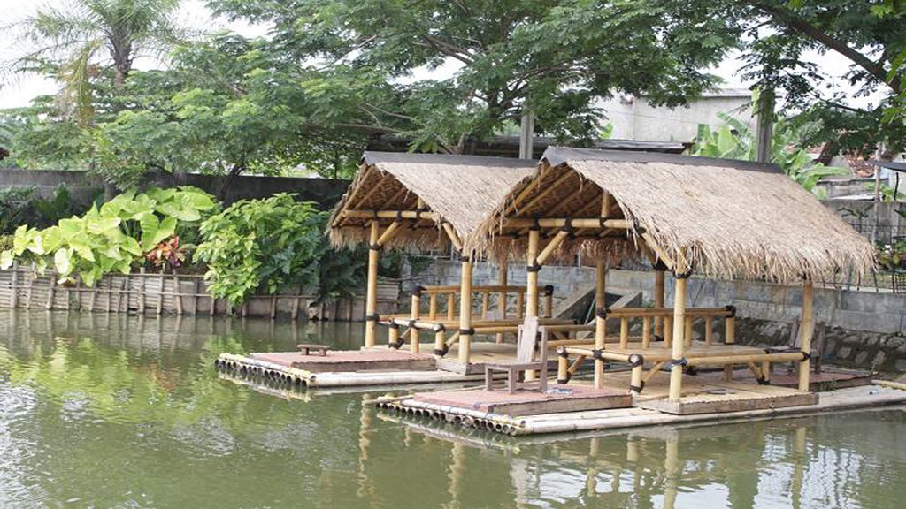
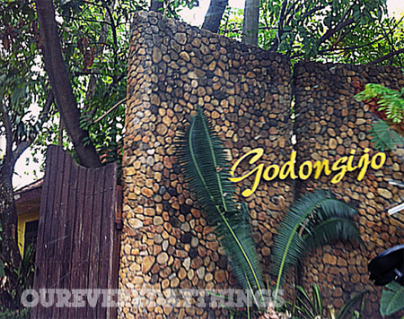
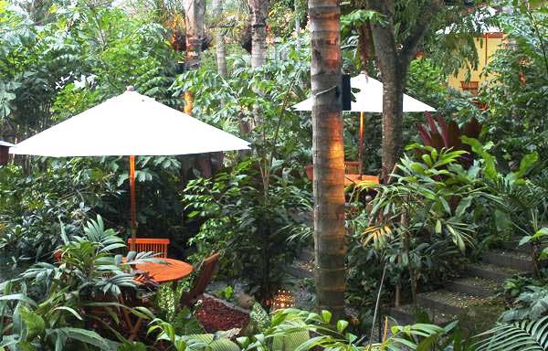

Cafe disini sedikit unik karena menampilkan nuansa Sunda yang kental. Bahkan masakannya juga kebanyakan adalah masakan Sunda.
Untuk yang ingin mencoba memancing bisa dilakukan di tempat ini. Ikan hasil pancingan juga bisa diolah dan dinikmati di sini.
Disini juga ada ruangan khusu yang bisa dipakai untuk meeting, acara keluarga, dan lainnya.
GodongIjo berlokasi di Jl. Cinangka Raya No.KM 10 No. 60, Serua, Kec. Bojongsari.

Seperti konsepnya, memasuki Godong Ijo memang seakan berasa berada di hutan kecil. Terdapat banyak koleksi tanaman dan pohon-pohon besar dan rimbun bahkan beberapa terbilang langka. Untuk memberikan edukasi, setiap pohon diberi papan nama.
Prido ZH

Tidak hanya melihat-lihat dan mengenal berbagai jenis flora, pengunjung juga bisa turut dalam kegiatan bercocok tanam. Kegiatan ini akan mengajak pengunjung belajar mencangkok tanpa tanah hingga mengawinsilangkan tanaman. Instruktur juga akan memberi banyak informasi seputar perawatan tanaman.
Gregorius Bayu Aji Wibisono

Berbagai koleksi satwa dimiliki taman wisata ini. Ada ular raksasa sepanjang 8 meter, iguana raksasa sepanjang 1,8 meter, berbagai jenis ikan termasuk ikan besar yang terkenal ganas yaitu arapaima gigas, dan Kura-kura raksasa yang memiliki panjang mencapai 2 meter dan berat 350 kg.
Erika Amandasari